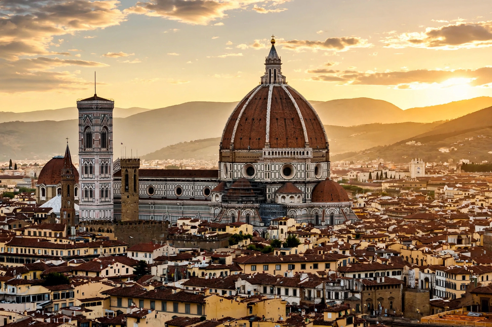

The architecture of Italy has influenced building worldwide for more than two thousand years. Italy was the source of Roman architecture, of the Renaissance that revived and transformed the classical heritage, and of the Baroque; Italian architects from Vitruvius and Alberti to Palladio and Borromini set the vocabulary of Western building. Italy possesses the largest number of UNESCO World Heritage Sites of any country, a great share of them architectural.
| Key periods | Roman; Romanesque; Gothic; Renaissance; Baroque; Neoclassical; Modern |
|---|---|
| Key figures | Vitruvius, Brunelleschi, Alberti, Bramante, Michelangelo, Palladio, Bernini, Borromini |
| Signature works | Colosseum; Florence Cathedral; St Peter's Basilica; Villa Rotonda; San Carlino |
| Influence | Classicism and Palladianism worldwide |

Roman builders revolutionised architecture with concrete, the arch, the vault and the dome: the Colosseum (80 CE), the Pantheon with its 43-metre unreinforced concrete dome, basilicas, baths, aqueducts and triumphal arches established a repertoire used for millennia. Vitruvius's treatise De architectura preserved classical theory for later ages.
Early Christian basilicas gave way to the Romanesque of Pisa Cathedral and its leaning campanile, and to regional Gothic at Milan Cathedral, Siena, Orvieto and the Venetian palazzi — a style Italy always adapted to its own classical instincts rather than importing wholesale.
In Florence Filippo Brunelleschi's dome for the cathedral (1420–1436) and his rediscovery of linear perspective opened the Renaissance. Leon Battista Alberti codified classical design in treatises and buildings; Bramante and then Michelangelo raised St Peter's Basilica in Rome; and Andrea Palladio's villas and churches around Vicenza and Venice, published in his Four Books of Architecture (1570), spread Palladianism across Europe and America.
Seventeenth-century Rome became the laboratory of the Baroque: Bernini's colonnade for St Peter's Square and Borromini's geometric churches such as San Carlo alle Quattro Fontane. Turin, Naples and Sicily developed distinctive regional Baroques, the last rebuilt in splendour after the 1693 earthquake.
After Neoclassicism and the eclectic styles of the new kingdom of Italy (1861), the twentieth century produced Futurism's manifestos, the Rationalism of Giuseppe Terragni's Casa del Fascio in Como, Fascist-era monumental building in Rome's EUR district, and postwar masters such as Pier Luigi Nervi (a pioneer of reinforced concrete), Gio Ponti (Milan's Pirelli Tower), Carlo Scarpa and Renzo Piano.